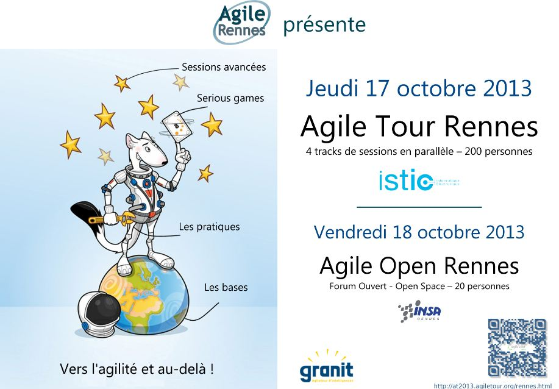
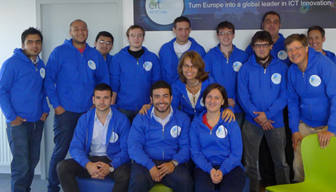

Comprendre aujourd'hui pour inventer demain ...
L'ISTIC est une unité de formation et de recherche
en INFORMATIQUE et ÉLECTRONIQUE de l'université de Rennes 1
Pour plus d'informations, cliquer sur le nom d'une rubrique dans la liste affichée à gauche de cette fenêtre
Actualités
1ère édition du «Technicolor Student Day»
La 1ère édition du «Technicolor Student Day» se déroulera le Jeudi 10 octobre 2013, à partir de 10h sur le site Technicolor de Cesson-Sévigné.
Technicolor ouvre ses portes aux étudiants de Master I et Master II afin de leur faire découvrir les métiers et les expertises présents sur le site de Rennes et d’échanger avec la génération future.
Agile Tour Rennes 2013 / Agile Open Rennes
Agile Tour Rennes 2013 : jeudi 17 octobre 2013 à l'ISTIC.
Cette nouvelle édition d'Agile Tour Rennes est ouverte aux enseignants, chercheurs et étudiants de l'ISTIC / IRISA / INRIA de Rennes pour lesquels 40 places gratuites sont réservées (incluant les pauses cafés et la pause sandwich du midi).
http://at2013.agiletour.org/rennes.html
Twitter : @atrennes (Agile Tour Rennes)
Twitter : @agilerennes (Association Agile Rennes)
Agile Open Rennes : vendredi 18 octobre 2013 à l'INSA<
L'ISTIC participe à un clip de promotion des masters Informatique
Oubliez l’image de l’informaticien seul derrière son écran ! L’informatique demande de savoir communiquer et de travailler en équipe sur des projets. Et ces projets peuvent être divers. Etudiants en masters pro, Gabrielle, Florian et Violette ont choisi des parcours différents. Pour Violette, c’est un parcours plus généraliste qui mêle compétences en informatique et connaissance de l’entreprise. Florian, lui, se forme au développement de logiciels. Quant à Gabrielle, elle a choisi la sécurité des réseaux.
Merci à tous ceux qui ont participé à ce petit film.
MASTER SCHOOL : EIT ICT Labs forme les entrepreneurs d’avenir des TIC
De Bosnie ou d’Iran, les étudiants de l’EIT ICT Labs font leur première rentrée en master 1 d'informatique au sein du parcours Distributed Systems and Services. Le programme européen forme des entrepreneurs d’excellence en informatique et télécom.
C'est la rentrée !
Consutez votre emploi du temps sur l'ENT de l'université.
Attachés Temporaires d'Enseignement et de Recherche
L'ISTIC a recruté des Attachés temporaires d'Enseignement et de Recherche (ATER) en 27e section sur trois postes pour l'année universitaire 2013-2014.
Nouveaux enseignants-chercheurs
L'ISTIC a recruté un professeur des universités en électronique et trois maîtres de conférences en informatique.